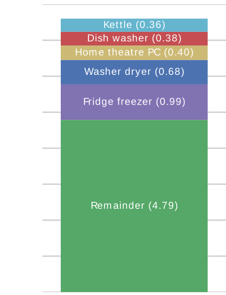

Energy Disaggregation
Jack Kelly
jack.kelly@imperial.ac.uk
Background video by Guryanov Andrey / shutterstock
Outline
- What is Energy Disaggregation?
- My PhD work
- Plans for a NILM competition
What is Energy Disaggregation?
Aggregate Energy Bill
Itemised Energy Bill



My PhD Work
- First to apply deep neural nets to energy disaggregation
- A lead developer on open source disaggregation tool NILMTK
- Disaggregated energy dataset: UK-DALE
- NILM Metadata:
- Used by > 9 datasets
- Systematic review: Does disaggregated electricity feedback reduce domestic electricity consumption?
Recurrent Neural Nets
Example Output from Deep Neural Net
Autoencoder
Metrics on Unseen Appliances
Plans for a NILM algorithm competition
Why we need a NILM competition
- Currently impossible to compare NILM
algorithms
- Different datasets, metrics, pre-processing, appliances etc.
- Hence no way to measure progress or select best algos
- Competitions work for other machine learning fields
Work plan
Questions?
jack.kelly@imperial.ac.ukDeep Neural Nets
ImageNet Large Scale Visual Recognition Challenge (ILSVRC)
From: Krizhevsky, Sutskever & Hinton. ImageNet Classification with Deep Convolutional Neural Networks. NIPS (2012)

Image from devblogs.nvidia.com
Krizhevsky et al.'s DNN Results on ImageNet 2012
Krizhevsky, Sutskever & Hinton. ImageNet Classification with Deep Convolutional Neural Networks. NIPS (2012)
Denoising Autoencoders
Bounding Rectangle
Example Output from Deep Neural Net
LSTM
Autoencoder
Rectangles